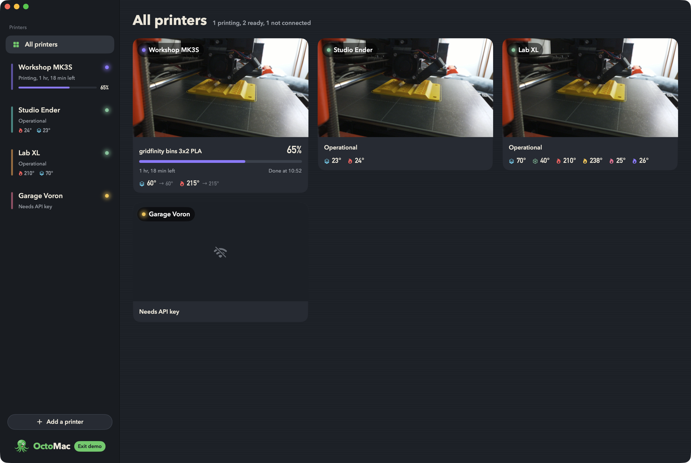

All printers, side by side
Add as many OctoPrint servers as you like. Each one shows its status, temperatures and progress in the sidebar, and All printers puts every camera and print on one screen.
OctoMac listens to OctoPrint's live connection, so temperatures, progress and events appear the moment they happen. It finds OctoPrint on your network for you, and copes with self-signed HTTPS and printers behind a reverse proxy.
